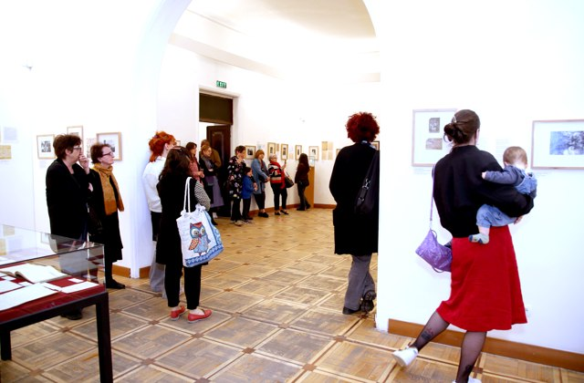

Project report · 2026
Blue Horns Manuscript Preservation Pilot — Project Closeout Report
Giorgi Leonidze State Museum of Georgian Literature · Review of the 2023–2024 pilot
A review of manuscript condition assessment, archival rehousing, bilingual inventory work, selective digitization, training, and public access. It compares the pilot’s reported outputs with the February 2024 working inventories and identifies recommendations and evidence gaps for future preservation.
Read closeout reportDrive access may be requiredExplore project